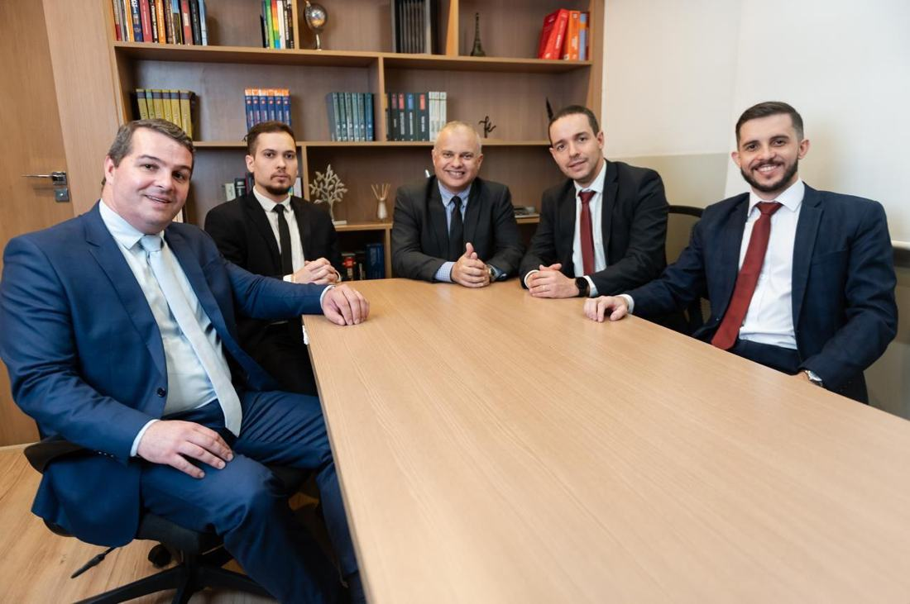

Onde tudo começou. A base de duas décadas de história.
Barra Mansa é o território onde o Cotrim Advogados Associados foi constituído e cresceu. É aqui que acumulamos mais de 20 anos de relações, de clientes e de experiência no setor de transportes e fretamento — com profundo conhecimento da dinâmica empresarial da região.
Nossa filial histórica continua sendo o coração do escritório: a base de operações e o ponto de partida para tudo o que construímos depois.
endereço
Condomínio do Edifício Profissões Liberais
Av. Joaquim Leite, 160 — sala 204 — Centro, Barra Mansa/RJ — CEP 27330-040
telefones